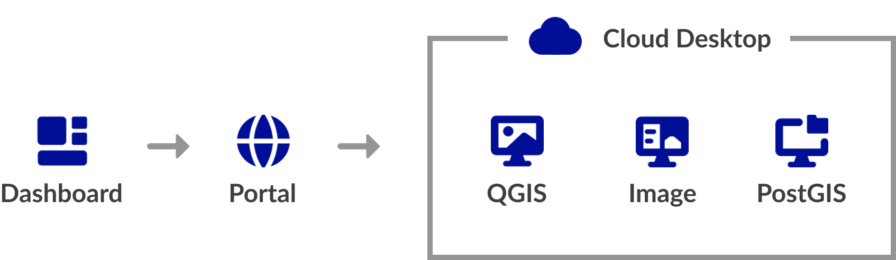

QGIS Cloud Desktop Overview¶
How It Works¶
QGIS Cloud Desktop gives users a complete Linux desktop that runs in the cloud.
When a user starts a session, the service creates a cloud computer for them. Once it is ready, they can open the desktop in a web browser and use QGIS much like they would on their own computer.
The cloud desktop runs separately from the user's physical computer. QGIS and other applications use the cloud computer's resources instead of the resources on the user's local machine.
QGIS Cloud Desktop Architecture¶
QGIS Cloud Desktop consists of several components that work together:
| Component | Purpose |
|---|---|
| GeoSpatialHosting Dashboard | Used by Organisation Owners to manage users, desktop access, storage, and database connections. |
| QGIS Cloud Desktop Portal | The user-facing portal where End Users launch and manage their desktop sessions. |
| Cloud Desktop Instance | The Linux desktop environment where QGIS and other applications run. |
| Desktop Image | Defines the software environment available inside the cloud desktop. |
| PostgreSQL/PostGIS | Provides centrally managed spatial database access for users who have been granted a database connection. |

Cloud Desktop Sessions¶
QGIS Cloud Desktop runs in a temporary session. Launching a session provisions the selected desktop image and cloud resources, which may take several minutes.
When finished, use End session in the QGIS Cloud Desktop Portal to stop the resources and avoid further usage charges. Files in the user's persistent home folder are retained.
Persistent Storage¶
Each user can have a persistent home folder for files retained between sessions, including:
- QGIS projects and datasets
- Scripts and configuration files
- Processing outputs and documents
The desktop instance is temporary, but the persistent home folder remains available. Initial storage is selected when access is granted and can be increased later.
Desktop Images¶
A desktop image defines the software environment used by a session. The Generic image provides a general-purpose GIS environment, while specialised images can support particular workflows.
PostgreSQL & PostGIS Integration¶
QGIS Cloud Desktop can connect to PostgreSQL/PostGIS databases managed through GeoSpatialHosting or hosted externally.
An Organisation Owner registers a database connection and grants it to End Users. QGIS Cloud Desktop then adds the required PostgreSQL service configuration to the user's persistent home folder.
Machine Tiers¶
Each QGIS Cloud Desktop instance runs using a selected Machine Tier.
The machine tier determines the computing resources available to the cloud desktop. Choosing the appropriate tier depends on the type of GIS work the user needs to perform.
The available machine tiers and their specifications may change as the service develops.
Pricing & Billing¶
QGIS Cloud Desktop uses usage-based billing for two components:
| Component | Billing basis | When charges apply |
|---|---|---|
| Cloud Desktop host | Selected machine tier, billed hourly from its monthly rate | While the desktop instance is running |
| Persistent storage | Allocated gigabytes, billed hourly from the monthly rate | While the storage volume is allocated, even if the desktop is stopped |
Host billing¶
Host charges are based on the selected tier’s hourly rate. Each session has a minimum charge of one hour; longer sessions are charged for the actual running time. Ending a session stops the host and prevents further host charges.
Storage billing¶
Storage charges depend on the allocated capacity and allocation time. For example, a 10 GB volume is charged at the applicable hourly storage rate multiplied by 10. Charges continue while the volume remains allocated, regardless of whether the desktop is running.
Cost factors¶
| Factor | Cost impact |
|---|---|
| Machine tier | Larger tiers cost more per hour |
| Session duration | Longer running sessions cost more |
| Storage capacity | Larger volumes cost more |
| Storage allocation period | Charges continue while storage remains allocated |
To control costs, choose an appropriate machine tier, end sessions when finished, and allocate only the storage required. Pricing and available options may change.
Who Is QGIS Cloud Desktop For?¶
QGIS Cloud Desktop is particularly useful for organisations that want to provide users with a consistent, centrally managed GIS environment without requiring every user to maintain their own local GIS installation. Typical use cases include:
-
Remote GIS teams
Give users access to a common GIS environment from different locations and computers.
-
Training environments
Provide students or trainees with a ready-to-use QGIS installation without requiring local setup.
-
Centralised GIS workflows
Keep applications, configurations, and database connections managed in a controlled environment.
-
Data-intensive workflows
Use cloud computing resources for GIS processing rather than relying solely on local hardware.
-
Organisations with multiple users
Provision separate desktop environments for multiple users from a central organisation dashboard.